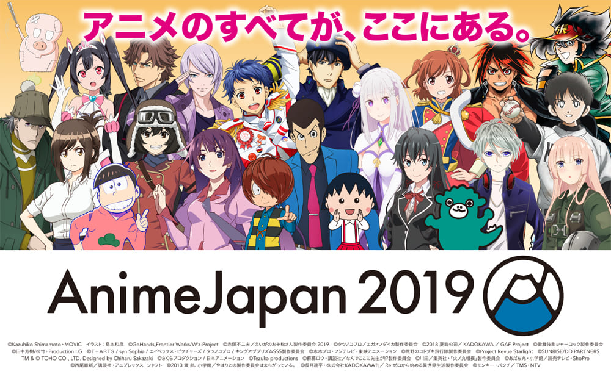
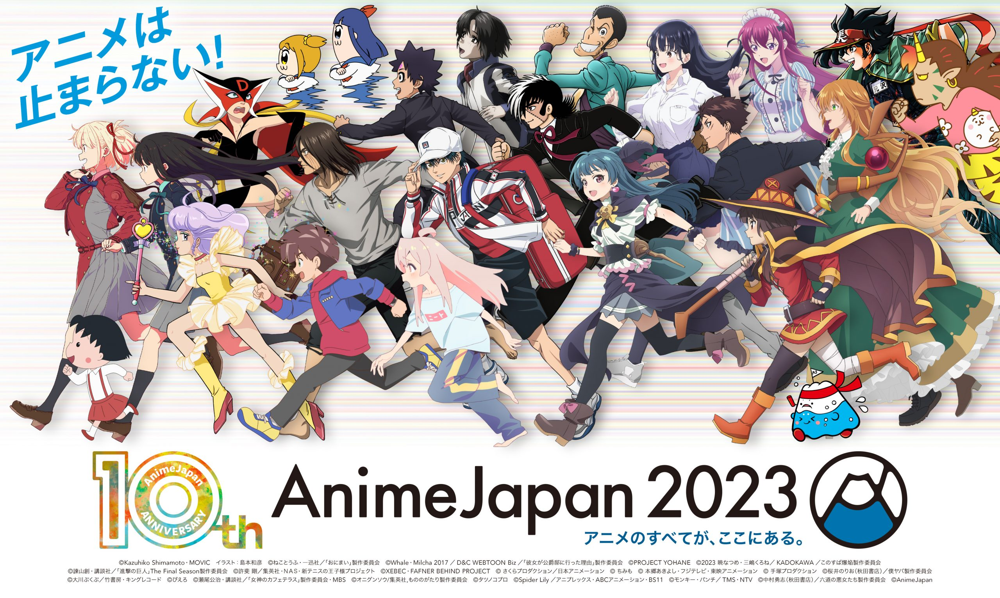
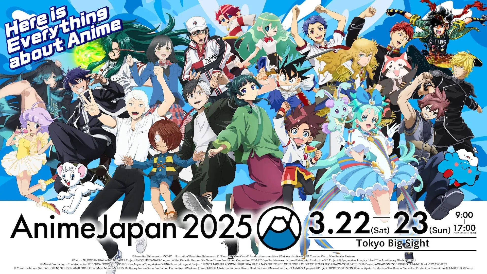
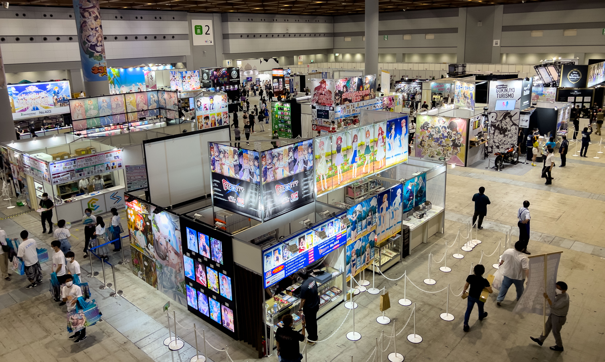
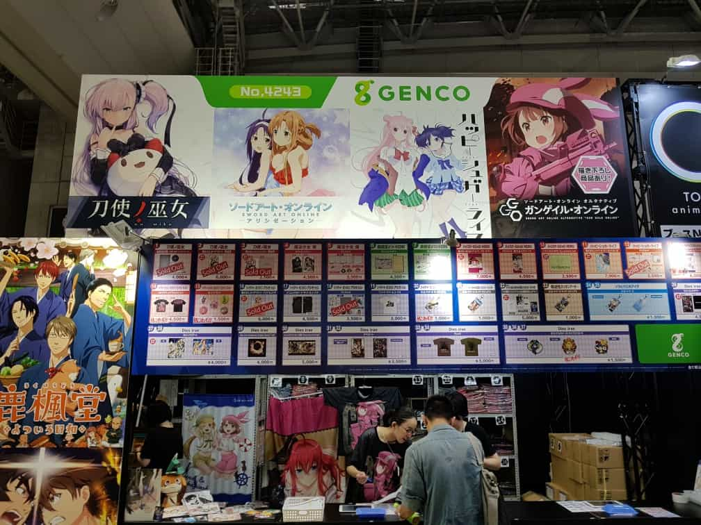
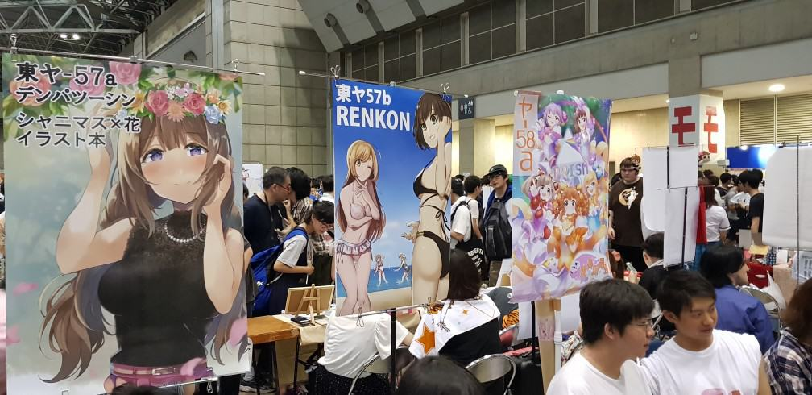
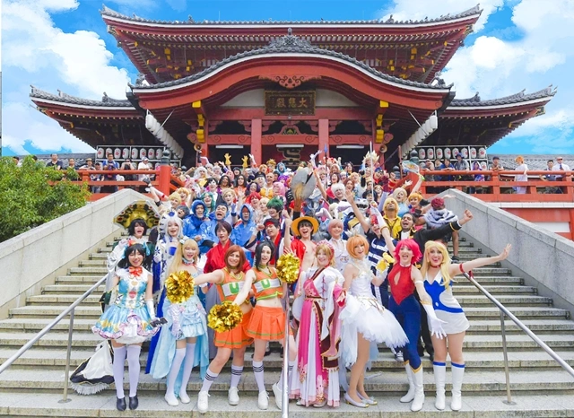
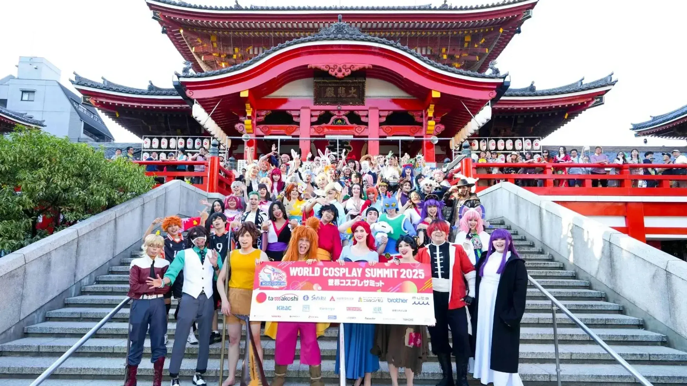
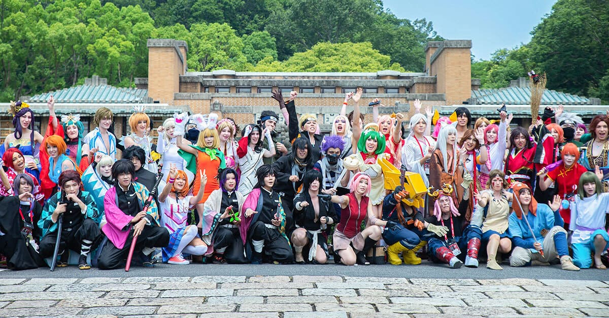

Cultural Festivals & Conventions
Planning your stay around a major event? Tokyo and Nagoya host some of the most iconic anime and manga gatherings in the world. Check out the schedule below:
AnimeJapan (Tokyo)
Dates: March 27th – 28th



AnimeJapan is a massive festival where fans explore exhibition booths from major studios, watch exclusive trailers, and attend panels featuring famous voice actors. Whether you are looking for exclusive merchandise or early screenings of new episodes, this is the premier event for serious anime lovers.
Comiket (Tokyo)
Dates: August 15th – 16th | December 29th – 31st



Comiket is the world’s largest self-published comic convention. Twice a year, thousands of creators gather to sell doujinshi (fan-made manga), indie games, and unique art. It’s the ultimate destination to meet independent artists and find rare, limited-edition treasures.
World Cosplay Summit (Nagoya)
Dates: July 31st – August 2nd




Witness the pinnacle of craftsmanship in Nagoya! This international competition features teams from around the globe performing stage shows as their favorite characters. Beyond the competition, you'll find incredible parades and photo areas dedicated to the global celebration of cosplay culture.